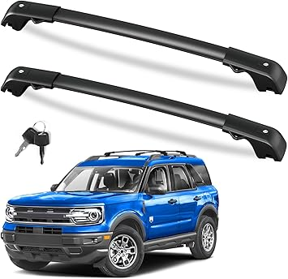

May 2026
Finding good broncorollbar shouldn't require hours of research. Yet in 2026, the sheer number of options makes it harder than it should be.

→ #1 — FengYu Roof Rack Cross Bars Compatible with Ford Bronco Sport On Road Base — Top rated
→ #3 — ROXX Universal Roll Bars for Pickup Sport Chase Rack Roll Bar Various Truck — Consistently rated
→ #2 — CLAMBER Roll Bar for Full-Size Pickup Truck Adjustable Sport Bar Chase Rack — Best seller
→ #5 — PTYYDS Overhead Molle Panel Compatible with 2021-2025 Ford Bronco 4 Door Ro — Consistently rated
→ #4 — Hooke Road Bronco Overhead MOLLE Panel Roll Bar Storage Rack for 2021-2026 — Fan favorite
Panic buying on sale days — Prime Day and Black Friday broncorollbar deals aren't always real discounts. Check year-round pricing.
Ignoring the fine print — Some broncorollbar listings look great until you realize key parts are sold separately.
Waiting for the perfect deal — If you need broncorollbar now, buy now. A 10% discount in 3 months costs you 3 months of use.
The best broncorollbar is the one that fits your needs and budget. Our detailed comparisons on broncorollbar.com make that call easier.